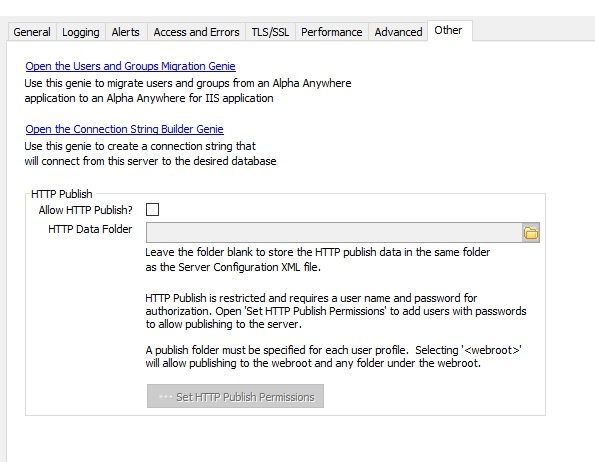
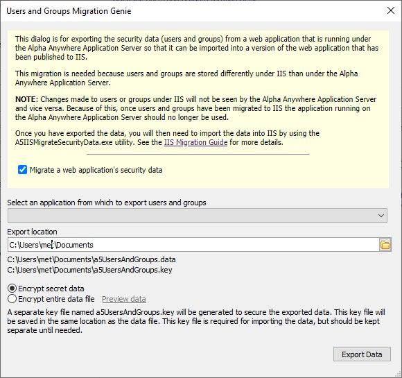
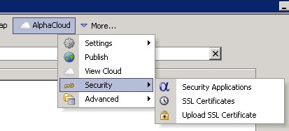
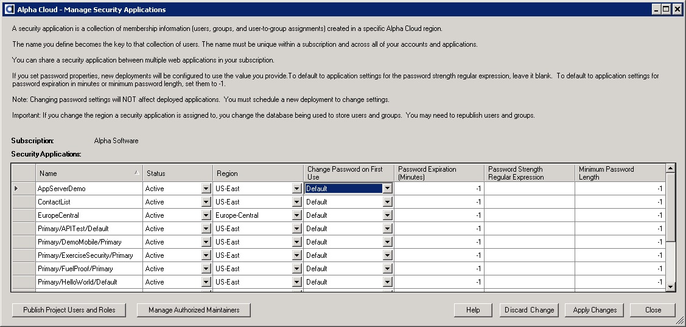
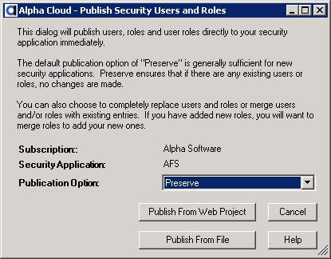
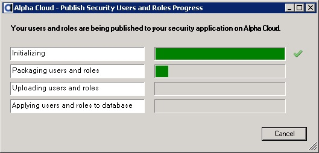

Alpha Cloud - Alpha Anywhere Developer's Guide
Overview
Seeding a New Deployment
Exporting Users and Roles From a Classic Server Deployment
Uploading Exported Users and Roles to Alpha Cloud
Adding New Roles
Alpha Anywhere Application Server for IIS user and role management is done with Microsoft IIS providers for Membership and Roles respectively.
When migrating an application from Alpha Anywhere Application Server (Classic/Standard), users and roles for deployed applications can be exported to a file and then imported a standard membership/role provider configuration.
This is an activity that can be done multiple times prior to production deployment, but should generally not be done after a deployment
is being accessed in production (discussed in more detail below).
Alpha Cloud managed users and roles are maintained and secured by Alpha Cloud, so the actual implementation is hidden from you and may be subject to change in the future.
Each set of users and roles is referred to as a Security Application.
By default, each new deployment is assigned a unique Security Application, but you can create and maintain a Security Application that
is shared across multiple deployments. In this way, user passwords for multiple deployed applications can be share among them.
To upload users and roles to Alpha Cloud, a dialog is provided that can be used to transfer users and roles from a file previously exported
from an existing Alpha Anywhere Application Server deployment.
Note: Alpha Cloud deployments are implemented using the MySQL Membership and Role providers.
In some cases, IIS providers may be read-only (such as Active Directory); so you must be using a writeable provider to import users and roles for on-premises IIS deployments.
For more information on migrating from Alpha Anywhere Application Server to Alpha Anywhere Application Server for IIS for on-premises
deployments, see Migrating Security Data to IIS in the Alpha Anywhere Application Server for IIS Migration Guide.
From within in Alpha Anywhere, you can add users and roles to a database used locally for testing.
We refer to these values as seed values because they are used to initialize a Security Application at the time of initial deployment.
Thereafter, users should be managed from within deployed web components.
Note: There is currently no way to update a user password directly on Alpha Cloud other than using a component run in the deployed application.
This is an idiosynchrasy of Microsoft Internet Information Services (IIS).
Access to the membership database is done through the running Membership or Role provider.
The recommended practice for developing new applications is to create a minimal set of users and roles from within Alpha Anywhere
and treat them as seed values; initial values to be uploaded once during the initial deployment.
Alpha Anywhere provides a set of templates and components that can be used to maintain users and roles for a Security Application assigned
to a deployment (a deployed application).
If you are currently deployed to the Alpha Anywhere Application Server (Classic/Standard), you may have chosen to store your
users and roles in a SQL database.
Some developers have gotten into the habit of maintaining users (and their passwords) and roles for their production system from within Alpha Anywhere.
When deploying to Alpha Cloud (and IIS on-premises), this practice is discouraged because uploading your seed database can inadvertently overwrite production user passwords if not done correctly.
Important: Although you are migrating users and roles from your previous security tables,
Alpha Anywhere will continue to depend on the original security tables you configured prior to migrating to Alpha Cloud (or IIS).
If you have been using SQL tables for security, you will need to keep those tables available to Alpha Anywhere during development and publication.
The database you migrated from is the one you will use when you add roles and test them from within Alpha Anywhere.
You may want to move the security tables to a local database for future development or reconfigure your local security profile if
you are planning to remove your prior database or move it to Amazon RDS (Relational Database Services).
You can export users and roles from a running Alpha Anywhere Application Server using the server control panel.
Note: If you are using a SQL Database to store your users and roles, you may also be able to export them using the server control panel within Alpha Anywhere.
Be sure your project settings match the application from which you want to export users and roles.
- Go to the application server control panel on the running server.
- Select the tab labeled "Other"

- Click on the link entitled "Open the Users and Groups Migration Genie"

- Check "Migrate a web application's security data"
- Select an application to export.
- Select a target folder for the two files to create (one is the encrypted data and one is the key for the data.
- Click the button entitled "Export Data".
- One the files are created, you may need to move them to a machine running Alpha Anywhere with internet access.
Note: Keep the key file somewhere safe to protect your user data.
The data file contains encrypted passwords, and they can be decrypted by someone with the key file.
Once you have a file with users and roles, you can use the Alpha Cloud dialogs to apply that set of data to a specific Security Application
on Alpha Cloud.
If you are not sure which Security Application to upload your users and roles to, open the Manage Deployments dialog and you will
see the name of the Security Application assigned to the deployment. By default the security application is named
<account>\<application><deployment> matching the deployment name within it's application and within the application's account. You can create a Security Application with a unique name (within your subscription) of your choice in the Mange Security Applications dialog. Any Security Application can be shared across multiple accounts, applications and deployments within your subscription.
- Click on the Alpha Cloud toolbar icon in the web control panel and select "Security" and then "Security Applications" from the drop down menu.

The "Manage Security Applications" dialog will display

Click on the security application row you want to publish your users and roles to.
Click the button at the bottom left of the dialog labeled "Publish Project Users and Roles" to open the "Publish Security Users and Roles" dialog.

Select the publish option that best describes what you want to accomplish.
The default option of "Preserve" will only publish users and groups if they have not been published for your security application previously.
Options for publishing Users and Roles are:
- Preserve - Publish only if no users or roles are found.
- Ignore - Do not publish users and roles.
- Merge - Add new users and roles.
- Replace - Replace all users and roles.
- Merge Roles - Add new roles.
- Replace Roles - Replace all roles.
If this is your first upload of the data from your application and you have not set any passwords in the Security Applicaiton
that need to be preserved, select "Replace". This will replace all of the data in the Security Applicaiton with the users and roles
in the file you are uploading.
If you have added new users that are not in the existing database, you may want to select "Merge".
You have two options for publication of users and roles:
Click the button labeled "Publish From Web Project" to publish users and roles from the current web project.
Click the button labeled "Publish From File" if you have an exported security file that you want to publish. You will be prompted for the file to upload.
In this case, Click "Publish From File".
You will be prompted for a file.
Navigate to and select the file that was exported. It has a ".data" extension.
There should also be a matching file with the extension ".key" in the same folder.

When the publication is complete, you will see the following message box.

Click the button labeled "OK" to dismiss the message box.
Back on the progress dialog, click the button labeled "Close" to return to the "Manage Security Applications" dialog.
If you are finished updating Security Applications, click the button labeled "Close" to return to the web control panel.
For more information on uploading users and roles from within Alpha Anywhere, see
Managing Security Applications
If you add one or more new roles to your security configuration from within Alpha Anywhere,
you can merge those new roles in with existing Security Applications by using the Publish Users and Roles dialog discussed above.
Simply publish from your web project and choose Merge Roles to add the new roles to the Alpha Cloud database.
Note: Be careful to choose Merge Roles and not one of the Replace options as this will overwrite your existing data.
Once you have uploaded the new roles, you will need to assign those roles to users as appropriate.